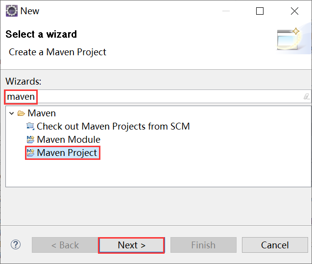
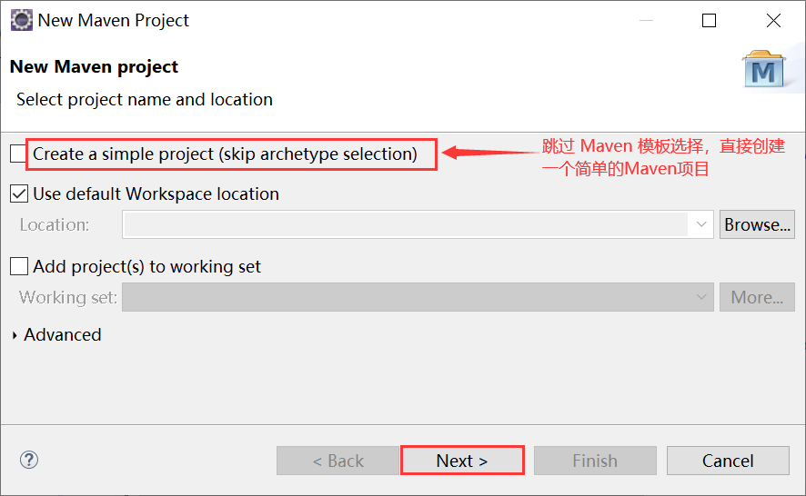
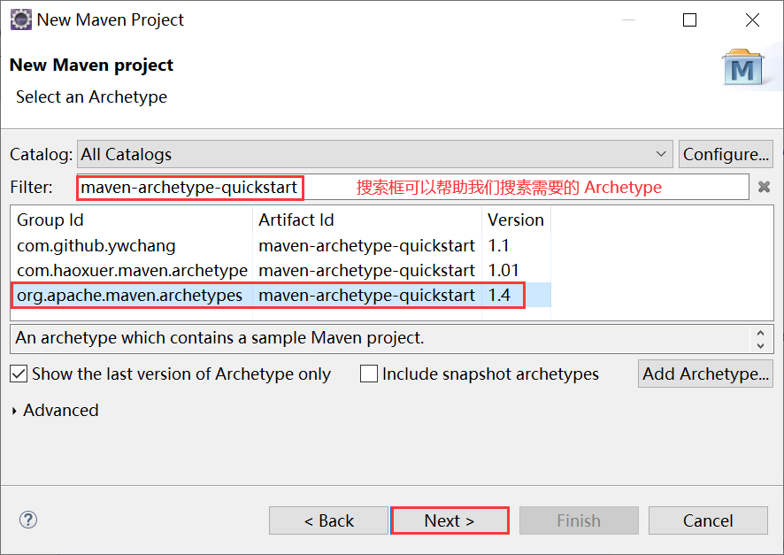
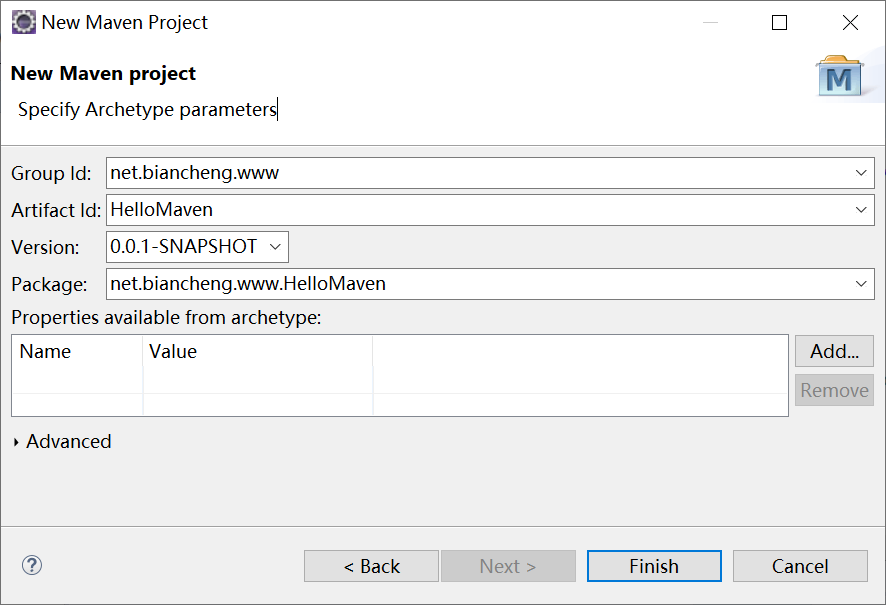
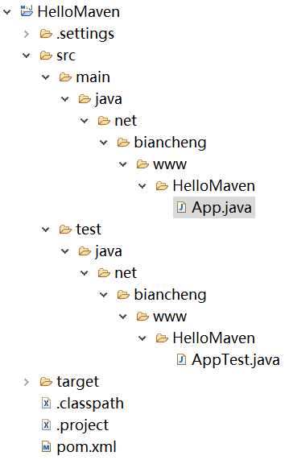

Eclipse新建Maven项目
我们知道，m2eclipse 是一个在 Eclipse 中集成 Maven 的插件，通过该插件我们可以很轻松的在 Eclipse 中新建 Maven 项目，本节我们将讲解如何使用 Eclipse 新建 Maven 项目。
1）在菜单栏中一次选择 File -->New --> Other，然后在搜索框中输入 maven，在下方选择 Maven Project，最后点击最下方的 Next 按钮，如图 1 所示。
2）新建 Maven 项目时，Eclipse 会提示我们是否跳过 Maven Archetype 选择，直接新建一个简单的 Maven 项目，该项目只包含最基本的 Maven 目录结构。若选择使用 Archetype 新建 Maven 项目，则直接点击 Next 按钮进行下一步。
3）如果选择使用 Archetype 创建，我们需要选择一个 Archetype（如 maven-archetype-quickstart），最后点击 Next 按钮，如图 3 所示。
5）返回 Eclipse 工作区，可以看到 Eclipse 已经为我们创建好了一个 Maven 项目，如图 5 所示。
新建 Maven 项目
在 Eclipse 中新建 Maven 项目十分得简单，具体步骤如下。1）在菜单栏中一次选择 File -->New --> Other，然后在搜索框中输入 maven，在下方选择 Maven Project，最后点击最下方的 Next 按钮，如图 1 所示。

图1：Eclipse 新建 Maven 项目
2）新建 Maven 项目时，Eclipse 会提示我们是否跳过 Maven Archetype 选择，直接新建一个简单的 Maven 项目，该项目只包含最基本的 Maven 目录结构。若选择使用 Archetype 新建 Maven 项目，则直接点击 Next 按钮进行下一步。

图2：新建简单 Maven 项目
3）如果选择使用 Archetype 创建，我们需要选择一个 Archetype（如 maven-archetype-quickstart），最后点击 Next 按钮，如图 3 所示。

图3：选择 Maven Archetype
4）接下来，我们需要填写项目的 Group Id、Artifact Id、Version、Package 等信息，最后点击 Finish 按钮，如图 4 所示。注意：在选择 Maven Archetype 时，Eclipse 可能需要一些时间加载数据，稍等片刻即可。

图4：填写 Maven 项目信息
5）返回 Eclipse 工作区，可以看到 Eclipse 已经为我们创建好了一个 Maven 项目，如图 5 所示。

图5：Eclipse 工作区 maven 项目目录结构
关注公众号「站长严长生」，在手机上阅读所有教程，随时随地都能学习。内含一款搜索神器，免费下载全网书籍和视频。

微信扫码关注公众号